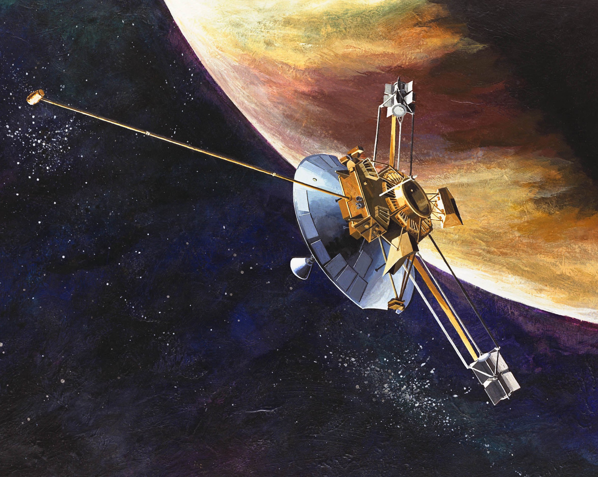
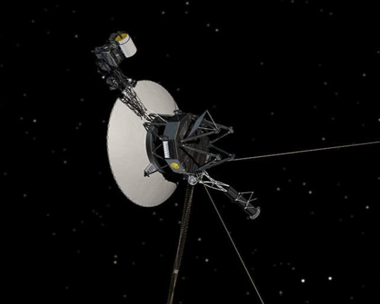
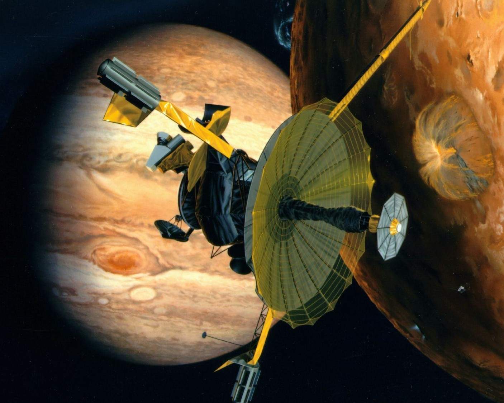
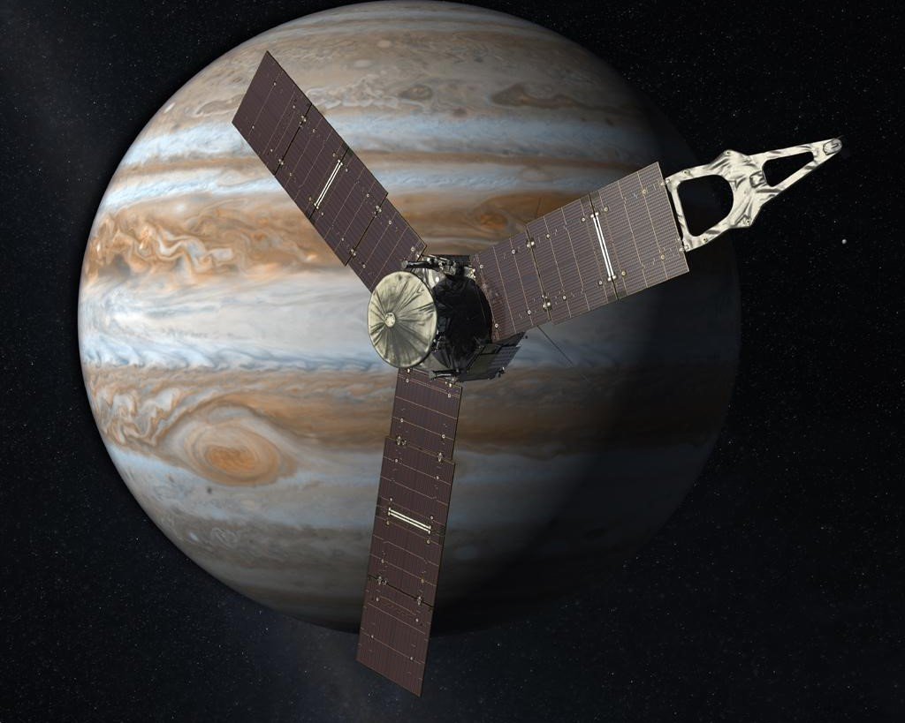
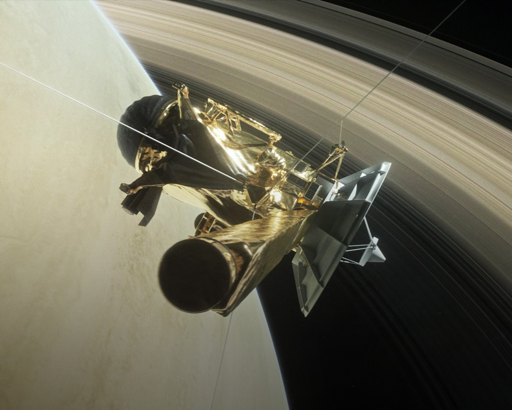
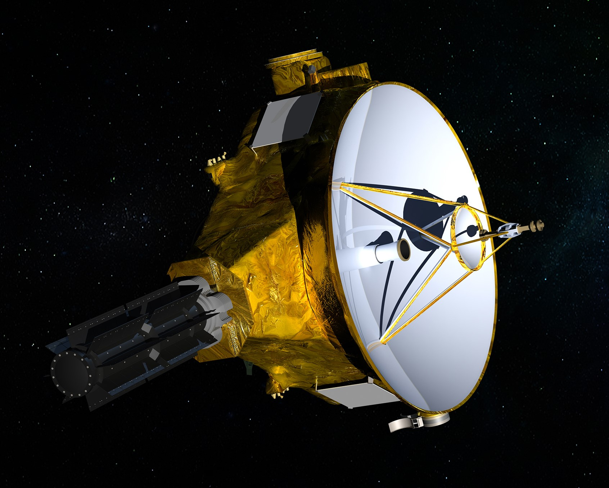

LES MISSIONS AU SYSTEME SOLAIRE EXTERNE
Les missions aux système spatiale interne sont des sondes spatiales envoyés pour explorer des planètes et objets se trouvant entre le soleil et la ceinture d'asterois qui se trouve entre Mars
et Jupiter. Ici vous trouverez quelques détails des plus notables dans le passé et actuellement.
Jupiter
L'exploration du planète le plus proche du soleil est assez compliqué du au fait de la necessité de se battre contre la gravité du soleil pour
approcher le planète. Pourtant, 2 missions ont réussi a l'explorer et une est en route.




Saturne
Le frère geographique de notre planète, l'objet plus brilliant dans le ciel nocturne après la Lune, pendant longtemps cru pouvoir avoir de la vie,
jusqu'a que les missions américaines et sovietique dans les années 60 ont revelé le contraire...

Uranus
Le plus fort candidat dans notre système solaire à devenir la deuxième maison de l'humanité, a déjà reçu plusieurs missions

Neptune
Notre partenaire d'orbite, et aussi le seul objet à part la Terre que les humains ont visité, reçois plusieurs missions encore.
Pluton
Notre partenaire d'orbite, et aussi le seul objet à part la Terre que les humains ont visité, reçois plusieurs missions encore.
